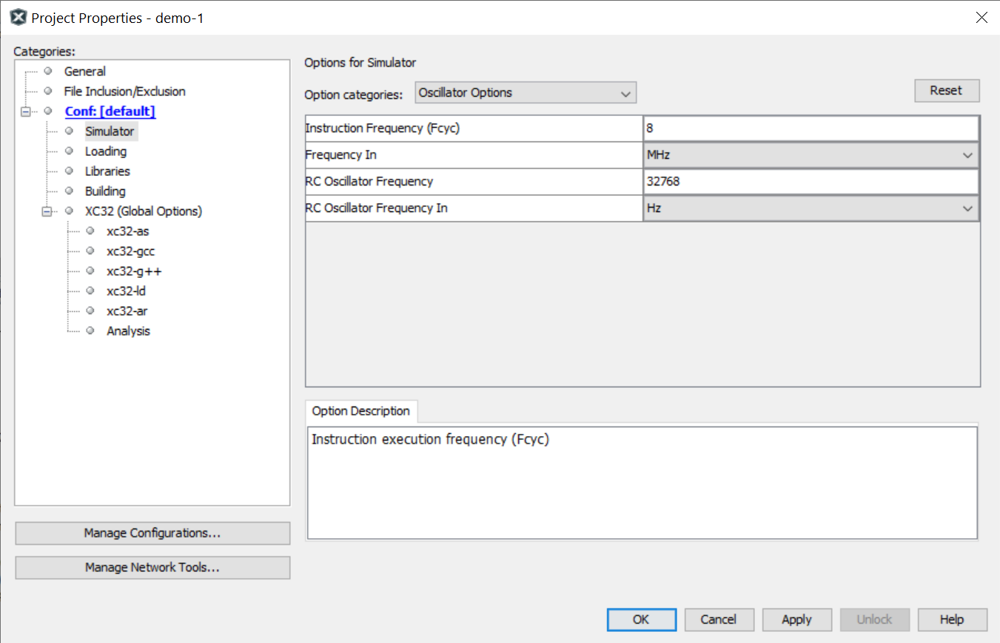
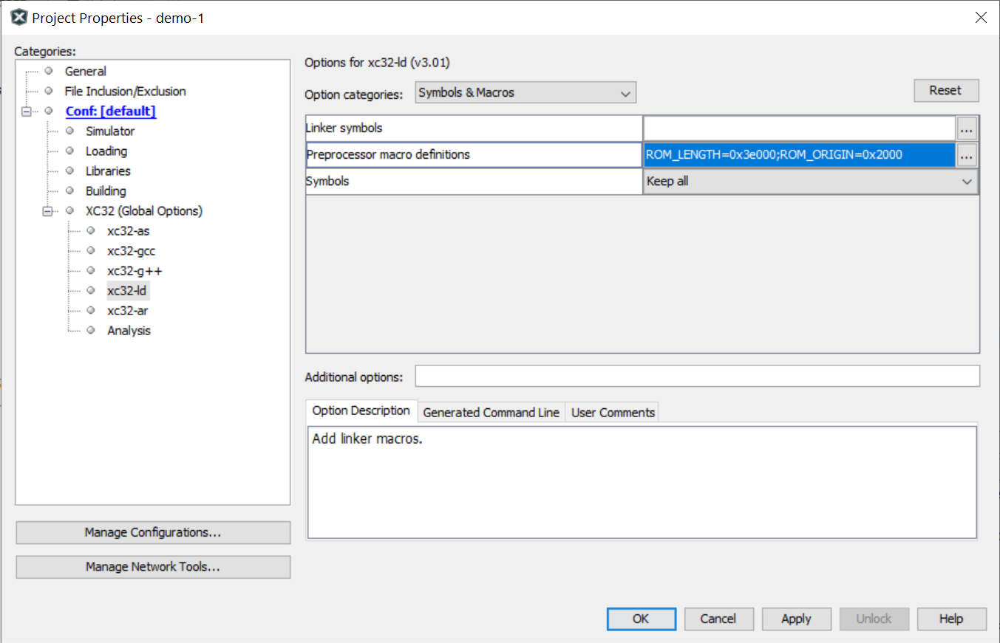

ATSAMD21 Programming with MPLAB-X IDE and Harmony v3 Framework#
บทความนี้นำเสนอขั้นตอนการติดตั้ง Microchip Harmony V3 Plugin สำหรับ MPLAB-X IDE (ทดลองใช้เวอร์ชัน v6.00 สำหรับ Windows) และการติดตั้งซอฟต์แวร์ต่าง ๆ ที่เกี่ยวข้อง เพื่อทดลองเขียนโปรแกรมสำหรับบอร์ดไมโครคอนโทรลเลอร์ ATSAMD21 (ARM Cortex-M0+) โดยใช้ Harmony Framework v3 และ XC32 Compiler
Keywords: MPLAB-X IDE, Harmony v3 Framework, ATSAMD21
▷ การติดตั้ง MPLAB Harmony Plugin#
ในอดีตหากต้องการเขียนโปรแกรมภาษา C/C++ สำหรับไมโครคอนโทรลเลอร์ขนาด 32 บิต ตระกูล SAM เช่น ATSAMD21 เราก็อาจเลือกใช้ซอฟต์แวร์ของบริษัท Atmel ต่อไปนี้ และสามารถใช้งานร่วมกันได้
- Atmel Studio 7 / Microchip Studio ทำหน้าที่เป็น IDE แต่ใช้ได้สำหรับระบบปฏิบัติการ Windows เท่านั้น
- Atmel Advanced Software Framework 4 (ASF4) for SAM devices ทำหน้าที่ API ระดับสูงสำหรับการเขียนโค้ด C/C++ ประกอบไปด้วยแพ็กเกจของซอฟต์แวร์ และไลบรารีต่าง ๆ
- Atmel START ทำหน้าที่เป็น Web-based Device & Software Content Configurator เพื่อช่วยในการตั้งค่าการใช้งานฮาร์ดแวร์ (Device Configuration) และสร้างโค้ดได้โดยอัตโนมัติ (Code Generation) และนำไปใช้กับ IDE ได้แก่ Atmel Studio 7, Keil uVision, IAR Embedded Workbench
แต่ถ้าเป็นบอร์ด Arduino ที่ใช้ชิปไมโครคอนโทรลเลอร์ดังกล่าว เช่น Arduino Zero หรือ Arduino MKR ก็สามารถใช้ Arduino IDE ในการเขียนโปรแกรมได้ แต่ก็จำกัดอยู่แค่ ATSAMD21 เท่านั้น ไม่สามารถใช้กับบอร์ดที่มีชิปไมโครคอนโทรลเลอร์ตระกูล SAM ที่แตกต่างออกไปได้ (เช่น SAM-L, SAM-C, SAM-xE เป็นต้น)
ในปัจจุบัน บริษัท Microchip ได้รองรับการใช้งานชิปไมโครคอนโทรลเลอร์ของตระกูล SAM ให้สามารถใช้งานร่วมกับซอฟต์แวร์ของทางบริษัทได้แก่
- MPLAB-X IDE ทำหน้าที่เป็น IDE แทนที่การใช้งาน Atmel Studio 7
- MPLAB Harmony 3 แทนที่การใช้งาน Atmel ASF4
- MPLAB Harmony 3 Configurator แทนที่การใช้งาน Atmel START
MPLAB Harmony Framework เป็นซอฟต์แวร์ประเภท Open Source (Github repo) ที่ใช้ในการพัฒนาเฟิร์มแวร์ (Embedded Software Development Framework) ด้วยภาษา C/C++ สำหรับไมโครคอนโทรลเลอร์ 32 บิต ของบริษัท Microchip ซึ่งได้แก่ ตระกูล PIC32 และ SAM (Arm Cortex-M Series)
รูป: MPLAB Harmony Framework (Source: Microchip)
รูป: MPLAB Harmony 3 Software Packages (Source: Microchip)
รูป: MPLAB Harmony 3 Device & Software Configurator (Source: Microchip)
ผู้ใช้จะต้องติดตั้งซอฟต์แวร์ MPLAB-X IDE ไว้ในเครื่องคอมพิวเตอร์พร้อมแล้ว เมื่อเปิดใช้งาน ให้ไปที่เมนูคำสั่ง Tools > Plugins เพื่อติดตั้งซอฟต์แวร์ดังนี้
- MPLAB Harmony Configurator (MHC) ทำหน้าที่เป็น GUI-based configurator ช่วยให้ผู้ใช้สามารถตั้งค่าการใช้งานชิปไมโครคอนโทรลเลอร์เป้าหมาย สร้างโค้ดที่เกี่ยวข้อง รวมถึงการนำเข้าไลบรารีต่าง ๆ ในโปรเจกต์
- MPLAB Harmony 3 Launcher สำหรับเรียกใช้งาน MHC จาก MPLAB-X IDE
ในหน้าต่าง Plugins ให้ตรวจสอบดูรายการ Available Plugins แล้วเลือกติดตั้ง MPLAB Harmony Configurator และ MPLAB Harmony 3 Launcher ตามลำดับ
รูป: การติดตั้ง MPLAB Harmony Configurator
รูป: การติดตั้ง MPLAB Harmony 3 Launcher
รูป: ตรวจสอบรายการ Plugins ที่ได้มีการติดตั้งในระบบได้แล้ว
▷ การติดตั้ง MPLAB Harmony Software Packages#
ไปที่เมนู Tools > Embedded > MPLAB Harmony Content Manager
รูป: เรียกใช้งาน MPLAB Harmony Content Manager
รูป: แสดงรายการ (บางส่วน) แบ่งเป็นแพ็กเกจ (Remote Packages) ที่สามารถดาวน์โหลดจาก Github เพื่อนำมาติดตั้งและใช้งาน
รูป: หากต้องการติดตั้ง core จะต้องมีการติดตั้งแพ็กเกจอื่นที่เกี่ยวข้องด้วย
ตัวอย่างรายการสำหรับการติดตั้งแพ็กเกจ มีดังนี้ และให้สังเกตว่า การเลือกเวอร์ชันของซอฟต์แวร์เหล่านี้ จะต้องสัมพันธ์กันตามหมายเลขเวอร์ชัน (Software Dependencies) เช่น
mhc(v3.8.2)dev_packs(v3.10.0)csp(v3.10.0)bsp(v3.10.0)core(v3.10.0)littlefs(v2.4.1)usb(v3.8.1)CMSIS-FreeRTOS(v10.3.1)
รายการแพ็กเกจที่ได้มีการติดตั้งแล้ว ผู้ใช้สามารถตรวจสอบดูได้จากรายการ Local Packages
หากต้องการเปิดใช้งาน MPLAB Harmony Configurator (MHC) จะต้องสร้างโปรเจกต์ใหม่ใน MPLAB-X IDE ก่อน
ถ้ายังไม่ได้ติดตั้งซอฟต์แวร์ Microchip XC32 Compiler ในเครื่องของผู้ใช้ ให้ดำเนินการติดตั้งก่อนทำขั้นตอนถัดไป
▷ การสร้างโปรเจกต์ใหม่#
ขั้นตอนมีดังนี้
1) ไปยังเมนู File > New Project... แล้วเลือก "Categories: Microchip Embedded" และ "Projects: 32-bit MPLAB Harmony 3 Project" แล้วกดปุ่ม Next
รูป: เริ่มต้นขั้นตอนการสร้างโปรเจกต์ใหม่
2) กดปุ่ม Launch Content Manager แล้วกดปุ่ม Next
ในตัวอย่างนี้ ได้มีการติดตั้ง MPLAB Harmony 3 Packages ไว้ในไดเรกทอรี
C:\Work\Harmony3 ดังนั้นจะต้องเลือก Framework Path
ให้ถูกต้องตามที่มีอยู่จริงในคอมพิวเตอร์ของผู้ใช้
รูป: เปิดใช้งาน Launch Content Manager
3) ตั้งชื่อโปรเจกต์ใหม่ และไดเรกทอรีสำหรับโปรเจกต์

รูป: ตัวอย่างการตั้งชื่อและสร้างไดเรกทอรีใหม่สำหรับโปรเจกต์
4) เลือกชิปไมโครคอนโทรลเลอร์ ในตัวอย่างนี้คือ "Device Family: ATSAM" และ "Target Device: ATSAMD21G18A" (ARM Cortex-M0+, 256KB Flash, 32KB SRAM, 48MHz)
รูป: เลือกชิปไมโครคอนโทรลเลอร์ที่จะใช้งานในโปรเจกต์
5) เข้าสู่ขั้นตอนการตั้งค่าฮาร์ดแวร์และซอฟต์แวร์สำหรับโปรเจกต์โดยใช้ MHC จากนั้นจะปรากฎหน้าต่าง "Configuration Database Setup" ให้กดปุ่ม Launch
รูป: Configuration Database Setup
จากรูปจะเห็นได้ว่า มีส่วนที่เกี่ยวข้องกับการตั้งค่าใช้งานสำหรับซอฟต์แวร์ CMSIS Pack และ Device Family Pack (DFP) ของ Device Packs และวงจรภายในชิป เช่น NVMCTRL, EVSYS, System
ในเบื้องต้นยังไม่ต้องแก้ไขการตั้งค่าใด ๆ และให้ทำคำสั่ง MHC > Generate Code เพื่อสร้างไฟล์ที่จำเป็นและนำเข้าสู่โปรเจกต์ใหม่ เช่น ไฟล์ Linker Script (.ld) สำหรับ XC32 Compiler และ Startup File เป็นต้น
รูป: แสดงเมนูคำสั่งย่อยที่เกี่ยวข้องกับ MHC
6) เปิดไฟล์ main.c ในโปรเจกต์ แล้วแก้ไขตามโค้ดตัวอย่าง และคอมไพล์โค้ดเพื่อตรวจสอบความถูกต้อง
รูป: การเปิดไฟล์ main.c และเขียนโค้ดตามตัวอย่าง
File: main.c
#include <stddef.h> // Defines NULL
#include <stdbool.h> // Defines true
#include <stdlib.h> // Defines EXIT_FAILURE
#include "definitions.h" // SYS function prototypes
int main( void ) {
/* Initialize all modules */
// SYS_Initialize ( NULL );
SYSCTRL_REGS->SYSCTRL_OSC8M &= ~SYSCTRL_OSC8M_PRESC_Msk; // 8MHz
PORT_PinOutputEnable( PORT_PIN_PA27 );
PORT_PinClear( PORT_PIN_PA27 );
while ( true ) {
PORT_PinToggle( PORT_PIN_PA27 );
for ( uint32_t i=0; i < 1000000; i++ ) { // busy-wait
asm volatile( "nop\n" );
}
}
return ( EXIT_FAILURE );
}
โค้ดตัวอย่างแรกนี้ เป็นการสาธิตการเขียนโค้ดเพื่อทำให้ขา PA27 เปลี่ยนสถานะลอจิก และมีการเว้นระยะเวลา ก่อนทำคำสั่งครั้งถัดไป (โดยใช้วิธี Software Delay Loop)
ในการทำงานของซีพียูและวงจรภายในชิป ATSAMD21 ในตัวอย่างนี้ เราจะใช้สัญญาณ Clock จากวงจรสร้างสัญญาณภายใน (On-chip Oscillator) ที่มีความถี่ 8 MHz (และตั้งค่าตัวหารความถี่เป็น /1)
7) ตั้งค่าความถี่ในการทำคำสั่งของซีพียูสำหรับตัวจำลองการทำงาน Simulator
ถ้ายังไม่มีบอร์ดไมโครคอนโทรลเลอร์ และต้องการตรวจสอบการทำงานของโค้ดตัวอย่าง ก็ให้ใช้งาน Simulator ของ MPLAB-X IDE
ให้ไปที่ File > Project Properties แล้วให้แก้ไขการตั้งค่าในส่วนที่เกี่ยวกับ Conf: [default] > Simulator > Options for Oscillator ให้ตั้งค่าตามรูปตัวอย่าง แล้วกดปุ่ม Apply / OK

รูป: การตั้งค่าความถี่ของซีพียูสำหรับการจำลองการทำงาน
8) จำลองการทำงานของโค้ดตัวอย่าง โดยใช้วิธี Simulator จากเมนูคำสั่ง Debug > Debug Project แต่ก่อนเริ่มต้นขั้นตอน Debug แนะนำให้เลือกตำแหน่งของบรรทัดที่จะใช้เป็น Breakpoint ในโค้ดตัวอย่าง
รูป: เมนูคำสั่งย่อยที่เกี่ยวข้องกับการทำงานของ Debugger เช่น เปิดดูค่าของตัวจับเวลาในระบบ (Stopwatch) เป็นต้น
รูป: การหยุดชั่วคราวเมื่อดีบักเกอร์ (Debugger) จำลองการทำงานและทำคำสั่งมาถึงตำแหน่ง Breakpoint
รูป: ดูการเปลี่ยนแปลงของสถานะลอจิกที่ขา I/O Pin: PA27 ในขณะที่จำลองการทำงาน
▷ การเขียนโค้ดแบบ Bare-Metal C#
ตัวอย่างโค้ดที่ 2 สาธิตการเขียนโค้ดโดยการเข้าถึงรีจิสเตอร์ แทนการเรียกใช้ฟังก์ชัน (ดังนั้นจึงเป็นการเขียนโค้ดแบบ Bare-Metal C)
#include <xc.h>
void sw_delay( uint32_t n ) {
for ( uint32_t i=0; i < n; i++ ) {
asm volatile("nop");
}
}
int main( void ) {
SYSCTRL_REGS->SYSCTRL_OSC8M &= ~SYSCTRL_OSC8M_PRESC_Msk; // 8MHz
PORT_REGS->GROUP[0].PORT_DIRSET = (1<<27); // PA27 as output pin
while ( 1 ) {
PORT_REGS->GROUP[0].PORT_OUTTGL = (1<<27); // toggle PA27 pin
sw_delay( 500000ul );
}
return 0;
}
รูป: ตัวอย่างการดีบักโค้ดและกำหนดตำแหน่ง Breakpoints
▷ การเปิดใช้งานวงจร SysTick ของ Arm Cortex-M0+#
ตัวอย่างโค้ดที่ 3 สาธิตการเปิดใช้งาน SysTick เพื่อใช้เป็นตัวนับของระบบด้วยความถี่คงที่
#include <stddef.h> // Defines NULL
#include <stdbool.h> // Defines true
#include <stdlib.h> // Defines EXIT_FAILURE
#include <definitions.h> // Defines SYS_Initialize
int main( void ) {
SYS_Initialize( NULL );
SYSTICK_TimerStart();
PORT_PinOutputEnable( PORT_PIN_PA27 );
PORT_PinClear( PORT_PIN_PA27 );
while(1) {
PORT_PinToggle( PORT_PIN_PA27 );
SYSTICK_DelayMs( 100 );
}
return EXIT_FAILURE;
}
หากต้องการเปิดใช้งานวงจร SysTick (ใช้ความถี่ 8MHz จากวงจรภายใน) ในกรณีนี้ ให้เรียกใช้ MHC อีกครั้ง ตั้งค่าตามรูปตัวอย่าง และทำคำสั่ง Generate Code อีกครั้ง
รูป: ตั้งค่าการใช้งานสำหรับ SysTick
หากจะคอมไพล์โค้ดตัวอย่างและดีบักการทำงานของโค้ดโดยใช้ Simulator ให้แก้ไขโค้ดในไฟล์
plib_clock.c ในฟังก์ชัน SYSCTRL_Initialize() และ
GCLK0_Initialize() ตามรูปตัวอย่าง (แก้โค้ดให้เป็น Comment)
โค้ดในส่วนดังกล่าว จะทำให้เกิดการวนลูปซ้ำแบบ while เพื่อคอยตรวจสอบสถานะการทำงานของฮาร์ดแวร์
แต่สำหรับการจำลองการทำงาน โค้ดดังกล่าวไม่มีความจำเป็นต้องทำ
รูป: แก้ไขโค้ดบางส่วนในไฟล์ plib_clock.c
รูป: จำลองการทำงาน
▷ การสร้างไฟล์ .bin จาก .hex#
หากต้องการทำคำสั่งต่อจากขั้นตอน Build Project ก็มีตัวอย่างดังนี้ เช่น ต้องการจะสร้างไฟล์ .bin จากไฟล์ .hex ยกเว้นกรณีที่คอมไพล์เพื่อการดีบักโค้ด ให้ใส่คำสั่ง (หนึ่งบรรทัด) ดังนี้
if ${IsDebug}=="false" ${MP_CC_DIR}\xc32-objcopy
-I ihex -O binary "${DISTDIR}/${PROJECTNAME}.${IMAGE_TYPE}.hex"
"${DISTDIR}/${PROJECTNAME}.${IMAGE_TYPE}.bin"
รูป: เพิ่มคำสั่งหนึ่งบรรทัดแล้วคลิกตรง Checkbox: "Execute this line after build"
▷ การคอมไพล์โค้ดเพื่อใช้งานร่วมกับ Bootloader#
หากใช้บอร์ดไมโครคอนโทรลเลอร์ ATSAMD21 ที่ได้มีการติดตั้งเฟิร์มแวร์ในส่วนที่เรียกว่า Bootloader Section
เอาไว้แล้ว เช่น
Arduino Zero Bootloader หรือ
Adafruit Zero UF2 Bootloader for SAMD21 จำเป็นต้องเว้นช่วงแอดเดรส 0x0000 ถึง 0x2000 ในหน่วยความจำ Flash เอาไว้ ไม่ให้มีการเขียนทับ
ในกรณีนี้ ผู้ใช้สามารถตั้งค่าโดยใช้ MHC ได้ ซึ่งจะมีการสร้างไฟล์ Linker Script (.ld) ใหม่ และกำหนดค่าของสัญลักษณ์ดังนี้
ROM_ORIGIN=0x2000ROM_LENGTH=0x3e000
รูป: ตั้งค่า Application Start Address ให้เป็น 0x2000 (แทนที่จะเริ่มต้นจาก 0x0000)

รูป: การกำหนดสัญลักษณ์ในส่วนที่เกี่ยวข้องกับ Linker Script ได้ใน Project Properties
ไฟล์ .bin ที่ได้จากการคอมไพล์ สามารถนำไปใช้กับโปรแกรม เช่น bossac ของ Arduino เพื่อใช้ในการอัปโหลดผ่านสาย
USB เมื่อทำให้ไมโครคอนโทรลเลอร์อยู่ในโหมด Bootloader เช่น กดปุ่มรีเซตสองครั้งซ้อน (Double Click)
รูป: ตัวอย่างการทำคำสั่ง bossac.exe ของ Arduino IDE เพื่ออัปโหลดไฟล์ .bin ไปยังบอร์ดไมโครคอนโทรลเลอร์
ตัวอย่างคำสั่งเพื่อเรียกใช้งานโปรแกรม bossac.exe
set BOSSAC=C:\Users\%USERNAME%\AppData\Local\Arduino15\packages\arduino\tools\bossac\1.7.0-arduino3\bossac.exe
set BIN_FILE=C:\Work\harmony3_projects\atsamd21\firmware\demo-1.X\dist\default\production\demo-1.X.production.bin
%BOSSAC% -i -d --port=COM33 -i -e -w -v %BIN_FILE% -R
รูป: บอร์ด RobotDyn SAMD21 Mini ที่ได้นำมาทดลองใช้งาน
ข้อสังเกต: หากจะเลือกใช้บอร์ด Seeeduino XIAO แม้ว่าจะใช้ชิป ATSAMD21 มี SMD LEDs ที่ขา PA17, PA18, PA19 และได้ติดตั้ง Arduino-compatible Bootloader เอาไว้แล้ว แต่บอร์ดนี้ ไม่มีปุ่มรีเซต (มีแต่เพียง Reset Pad ซึ่งมีขนาดเล็ก) จึงทำให้การรีเซตบอร์ดเพื่อเข้าสู่ Bootloader Mode ทำได้ค่อนข้างยาก หรือ ไม่สะดวก
▷ แหล่งข้อมูลศึกษาเพิ่มเติม#
- Configuring an application to be bootloaded for CORTEX-M based MCUs
- Harmony 3 peripheral library application examples for SAM D21/DA1 family
- Getting Started with Harmony v3 Drivers on SAM D21 MCUs Using FreeRTOS
- Microchip 32-bit Chip Support Package - SAM D20/D21 Peripheral Libraries
- PORT Peripheral Library Interface
- Harmony 3 Peripheral Library - Application Examples for SAM D21/DA1 Family (Code Repo)
▷ กล่าวสรุป#
บทความนี้สาธิตการติดตั้งและใช้งานซอฟต์แวร์ที่เกี่ยวข้องกับ MPLAB Harmony v3 เพื่อใช้งานร่วมกับ MPLAB-X IDE และเขียนโปรแกรมทดลองใช้งานกับบอร์ดไมโครคอนโทรลเลอร์ ATSAMD21
This work is licensed under a Creative Commons Attribution-ShareAlike 4.0 International License.
Created: 2022-01-30 | Last Updated: 2022-02-01